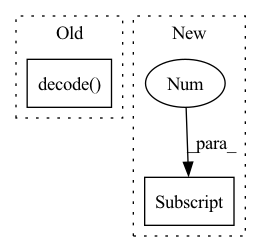

Pattern ID :2970
Before Change
mask=mask,
reduction = "token_mean")
else:
preds = self.crf.decode(emissions=logits, mask=mask)
logits = torch.LongTensor(preds)
return dict(loss=loss, logits=logits)
After Change
loss = None
if labels is not None:
loss_fn = nn.CrossEntropyLoss()
loss = loss_fn(logits.reshape(-1, logits.shape[-1] ), labels.reshape(-1))
// CRF
// loss = -self.crf(emissions=logits,
// tags=labels,In pattern: SUPERPATTERN
Frequency: 3
Non-data size: 2
Instances Fragment ID: 9914828
Project Name: thu-keg/omnievent
Commit Name: c9528cb88242cc5deb54f138d9b2bd2b987979d7
Time: 2022-05-09
Author: penghao20170136@163.com
File Name: src/OpenEE/model/model.py
M Class Name: ModelForSequenceLabeling
N Class Name: ModelForSequenceLabeling
M Method Name: forward(5)
N Method Name: forward(5)
M Parent Class: nn.Module
N Parent Class: nn.Module
M File Name: src/OpenEE/model/model.py
N File Name: src/OpenEE/model/model.py
M Start Line: 93
M End Line: 99
N Start Line: 86
N End Line: 101
Before Change
target_size = targets.size()[1]
t_self_mask = utils.create_trg_self_mask(target_size,
device=targets.device)
return self.decode( targets, enc_output, i_mask, t_self_mask, t_mask)
def initialize(self):
// weight init
for p in self.parameters():After Change
// Reshaping features
sizes = padded_input.size() // B x H_1 (channel?) x H_2 x T
padded_input = padded_input.view(sizes[0] , sizes[1] * sizes[2], sizes[3])
padded_input = padded_input.transpose(1, 2).contiguous() // BxTxH
encoder_padded_outputs, _ = self.encoder(padded_input, input_lengths) Fragment ID: 9914827
Project Name: qute012/kosr
Commit Name: b7d24b0d835254fd425224eba3421a3b7224e55f
Time: 2021-01-12
Author: ejrwls012@gmail.com
File Name: model/transformer/transformer.py
M Class Name: Transformer
N Class Name: Transformer
M Method Name: forward(4)
N Method Name: forward(3)
M Parent Class: nn.Module
N Parent Class: nn.Module
M File Name: model/transformer/transformer.py
N File Name: model/transformer/transformer.py
M Start Line: 19
M End Line: 28
N Start Line: 18
N End Line: 34
Before Change
mask=data_item["mask_tokens"])
loss_ner = -log_likelihood
pred_ner = crf_model.decode( ner_score) // , mask=data_item["mask_tokens"]
// 下面使用的是Softmax
// loss_ner = F.softmax(ner_score, data_item["ner_type"])After Change
// 这样计算交叉熵有问题吗
// 交叉熵计算不适用 rel_score_prob， 应该是rel_score_matrix
loss_rel = F.cross_entropy(rel_score_prob.permute(0, 3, 1, 2), data_item["pred_rel_matrix"], self.weights_rel) // 要把分类放在第二维度
loss_rel *= rel_score_prob.shape[1]
rel_score_prob = rel_score_prob - (self.config.threshold_rel - 0.5) // 超过了一定阈值之后才能判断关系
pred_rel = torch.round(rel_score_prob).to(torch.int64)
// print("hello2")
if is_test: Fragment ID: 9914826
Project Name: mangonihao/multiheadjointentityrelationextraction_simple
Commit Name: 3a8d46652627013ee302506e87489ee75fea8ae9
Time: 2021-03-08
Author: 2075419247@qq.com
File Name: modules/joint_model.py
M Class Name: JointModel
N Class Name: JointModel
M Method Name: forward(4)
N Method Name: forward(4)
M Parent Class: nn.Module
N Parent Class: nn.Module
M File Name: modules/joint_model.py
N File Name: modules/joint_model.py
M Start Line: 128
M End Line: 139
N Start Line: 130
N End Line: 165